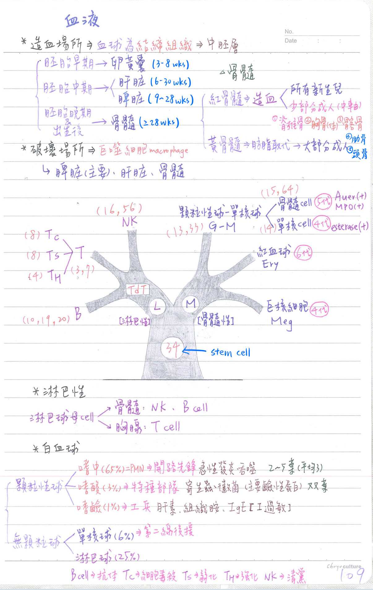
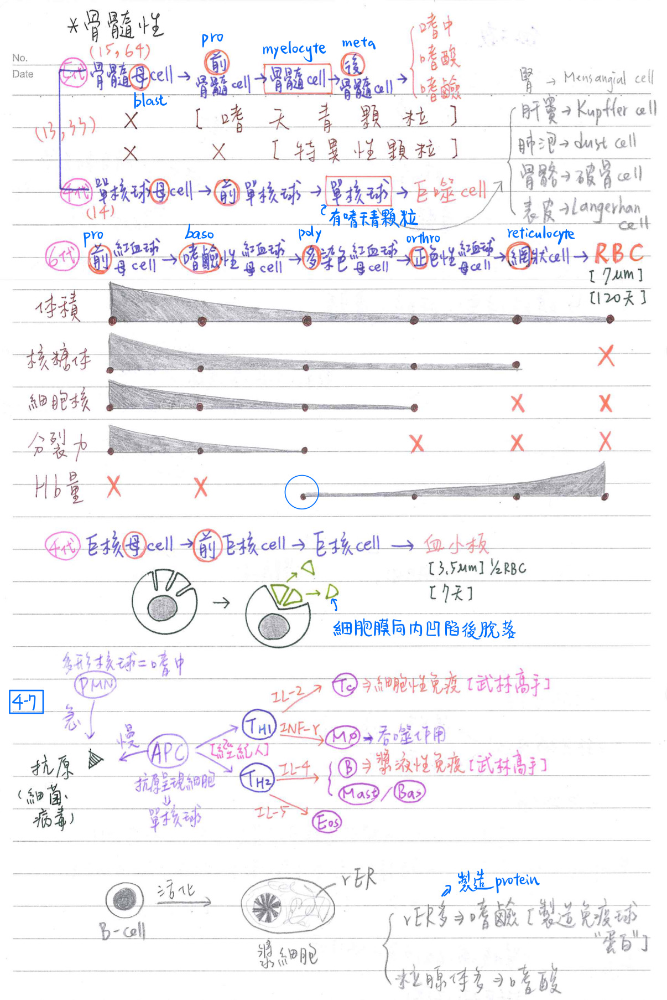
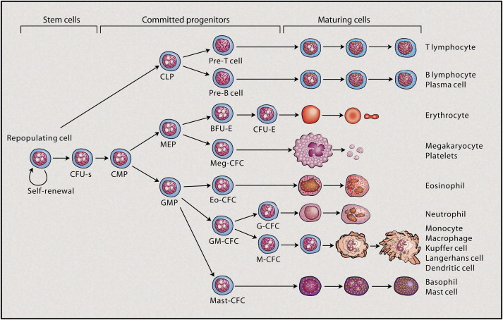
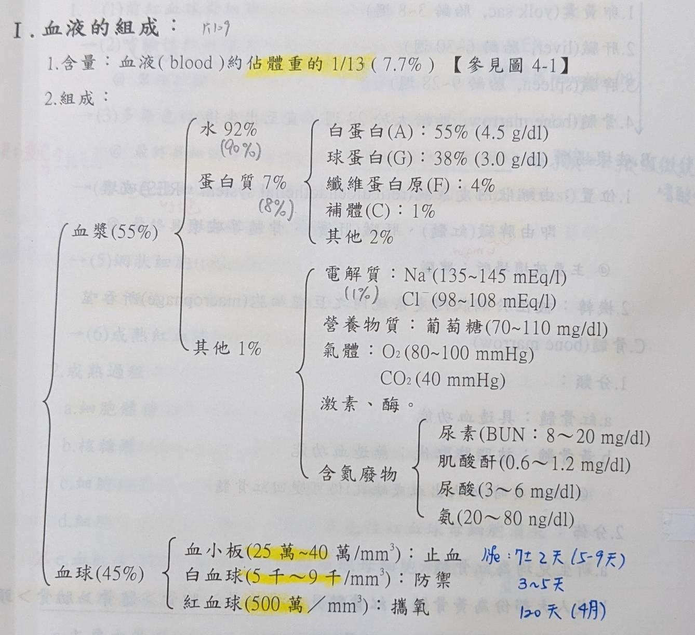

🩸 心血管系統-血液[偏組織學待補]
上課畫圖


血球的分化

- CFU-s：colony-forming unit-spleen
- CMP：common myeloid progenitor
- CLP：common lymphoid progenitor
- MEP：megakaryocyte-erythroid progenitor；★[109-2]為RBC和血小板共同的先驅細胞
- GMP：granulocyte-macrophage progenitor
- BFU-E：burst-forming unit-erythroid
- Meg：megakaryocyte
- Eo：eosinophil
- G：granulocyte
- M：macrophage
血液的組成
- 全血離心後：
- 白血球位於红血球上方之黄層(buffy coat, 1%)內
- 血小板位於白血球之上方，肉眼不可辨識
- 血比容(hematocrit, Hct)=紅血球/血液(體積比)=45%
- 比重=1.055；黏度=4；pH值=7.4±0.05；滲透壓=290±10 mOsm/L

血球的製造與破壞
- 造血場所：血球屬於結締組織，源自中胚層
- 卵黃囊(yolk sac；胎齡3~8週)
- 肝臓(liver；胎齡6~30週)
- 脾臓(spleen；胎齡9~28週)
- 骨髓(bone marrow；胎齡大於28週，直至出生後)
- 破壞場所：
- 位置：由網狀內皮系統(reticuloendothelial system, RES)破壞
→由脾臟(紅髓；主要破壞場所)、肝臟(肝竇)、骨髓等破壞 - 機轉：被位於網狀內皮系統內之巨噬細胞(macrophage)所吞噬
- 位置：由網狀內皮系統(reticuloendothelial system, RES)破壞
骨髓(bone marrow)
- 分類：
- 紅骨髓：具造血功能
- 黃骨髓：被脂肪取代；無造血功能
- 但必要時(EX：大出血或缺氧)仍可變回紅骨隨
- 分佈：
- 新生兒均為紅骨髓
- 成人大部份為黃骨髓；红骨髓見於：脊椎骨>胸骨>髂骨>肋骨>頭骨
等及少數長骨之骨端(如股骨)- 骨髓穿刺or切片處：
- 胸骨(體)：成人
- 髂骨(後上棘)：兒童(因為胸骨太薄可能會刺到心臟)
- 骨髓穿刺or切片處：
- 功能：
- 製造血球
- 破壞年老血球
- 貯存鐵離子
紅血球(red blood cell, RBC)
製造紅血球過程(erythropoiesis)
- 前紅血球母細胞(proerythroblast)
- 嗜鹼性紅血球母細胞(basophilic erythroblast)
- 富含聚核糖體(polyribosome)：因為rER開始合成hemoglobin(Hb)
- 多染色性紅血球母細胞(polychromatophilic erythroblast)：
- 最後具細胞分裂(mitosis)能力的
- 開始出現血红素(Hb)→因為Hb累積，可從顯微鏡中看出嗜酸性
- 正色性紅血球母細胞(orthrochromatophilic erythroblast)
- 最終具細胞核的細胞；但已沒有分裂能力
- 網狀細胞(reticulocyte)
- 無核；正常人約2%(出血後其含量會增加)
- 成熟紅血球(erythrocyte)
- 成熟過程：
- 細胞體積(cell volume)：漸小
- 核糖體(ribosome)：漸少，至成熟紅血球徹底消失
- 細胞核體積：漸小，至網狀細胞消失
- 細胞分裂能力：漸小，至正色性紅血球母細胞(orthro-)消失
- 血紅素(Hb)：自多染色性紅血球母細胞(poly-)漸增
- 紅血球生成素(erythropoietin,EPO)
- 主要由腎臓(85%)、肝臟(15%)製造
- 當缺氧時，EPO 製造增加，作用於骨髓→促進紅血球生成
紅血球-一般性質
- 成熟紅血球：呈圓盤凹形
- 直徑：約7um
💡
人體cell平均：10um
細菌：1um
病毒：0.1um💡無核的活細胞(皆為血液系統)：網狀細胞(reticulocyte)、RBC、血小板
- 平均壽命：120天
- 不含任何胞器(即無細胞核、無粒線體、無核糖體等)
血紅素(Hb)
- 紅血球主要成份為血紅素(Hb)：約佔33%紅血球之重量
- 正常值約：嬰兒18gdL；男性16g/dL；女性14g/dL
- 主要功能：攜帶O2 & CO2、作為緩衝溶劑(維持pH值恆定)
- 構造： 1血紅素(Hb)=4血基質十1球蛋白
- 血基質(heme)=紫質(prophyrin) + Fe2+ →可與O2結合
- 每一血基質：含一個Fe2+，可與一分子O2結合
- 球蛋白(globin)=4條胜肽鏈，可與H+ & C02結合
- 血基質(heme)=紫質(prophyrin) + Fe2+ →可與O2結合
- 依球蛋白之胜肽種類而分類：
- 成人(adult)：HbA1(α2β2；佔97.5%)、HbA2(α2δ2；佔2.5%)
- 胚胎(fetus)：★[110-1]HbF(α2γ2)
紅血球之破壞分解
- 球蛋白：主要在肝臓分解成尿素，由尿液(泌尿道)排出
- 血基質：大部份重回骨髓再利用(製造血紅素)，其餘於肝臟儲存
- 紫質：經肝臟轉變成結合型(直接型)膽紅素，由膽汁(消化道)排出
- 紫質(prophyrin)→膽綠素(biliverdin)→膽紅素(bilirubin)
→結合型膽紅素(conjugated bilirubin；水溶性)
→尿膽色素原(urobilinogen)→尿膽色素(urobilin)
- 紫質(prophyrin)→膽綠素(biliverdin)→膽紅素(bilirubin)
白血球(white blood cell, WBC)
造血過程(hematopoiesis)
- 株系(clone)指標：CD(cluster of differentiation)=細胞膜上之醣蛋白
- 幹細胞(stem cell, lymphoid & myeloid)：CD34
- immature (lymphoblastic)：TdT (terminal deoxynucleotidyl transferase)
- B-cell：CD-10、19、20
- T-cell：CD-3、7、4、8
- TH：具CD4；Ts/Tc ：具CD8)
- NK cell：CD-16、56
- myeloid：CD-13、33；15、64、14；Auer body(+)、MPO(+)
- MPO= 骨髓性過氧化酸(myeloperoxidase)
- 骨髓性(myeloid)細胞發育：
- 顆粒球細胞發育史：
- 骨髓母細胞(myeloblast)
- 無細胞質顆粒
- →前骨髓細胞(promyelocyte)
- 出現嗜天青顆粒(azurophilic granule，藍色；特化的溶酶體)
- →骨髓細胞(myelocyte)：嗜中性、嗜酸性、嗜鹼性
- 出現特異性顆粒(specific granule)：嗜中、嗜酸、嗜鹼性
- →後骨髓細胞(metamyelocyte)
- 嗜天青顆粒：變少；特定性顆粒：增多
- →嗜中性球(neutrophil)、嗜酸性球(eosinophil)、嗜鹼性球(basophil)
- 骨髓母細胞(myeloblast)
- 單核球、巨噬細胞：
- 單核球母細胞(monoblast)：也是來自myeloblast
- →前單核球(promonocyte)
- →單核球(monocyte)：嗜天青顆粒=初級溶酶體(lysosome)
- →巨噬細胞(macrophage)
Auer body MPO esterase CD 骨髓母細胞 + + 0 13、33；15、64 單核球母細胞 0 0 + 13、33；14 - 顆粒球細胞發育史：
- 淋巴性(lymphoid)：
- 淋巴球母細胞(lymphoblast)→
- 胸腺：T-cell [THI/TH2(helper) ㆍ Tc(cytotoxic) 、Ts(suppressor；CD8+ T cell的一種subtype)]
- 骨髓:B-cell、NK(natural killer)
- 淋巴球母細胞(lymphoblast)→
白血球-一般性質
- 具細胞核
- 直徑：8〜15um(最小：淋巴球；最大：單核球)
- 主要功能：身體的防禦(發炎反應及免疫)
(僅整理至4-5)